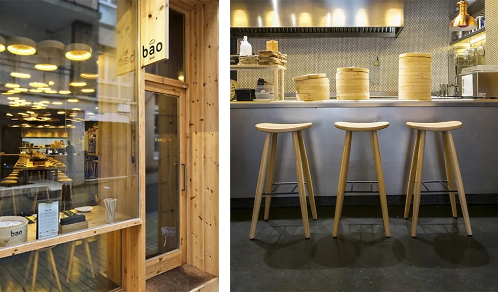
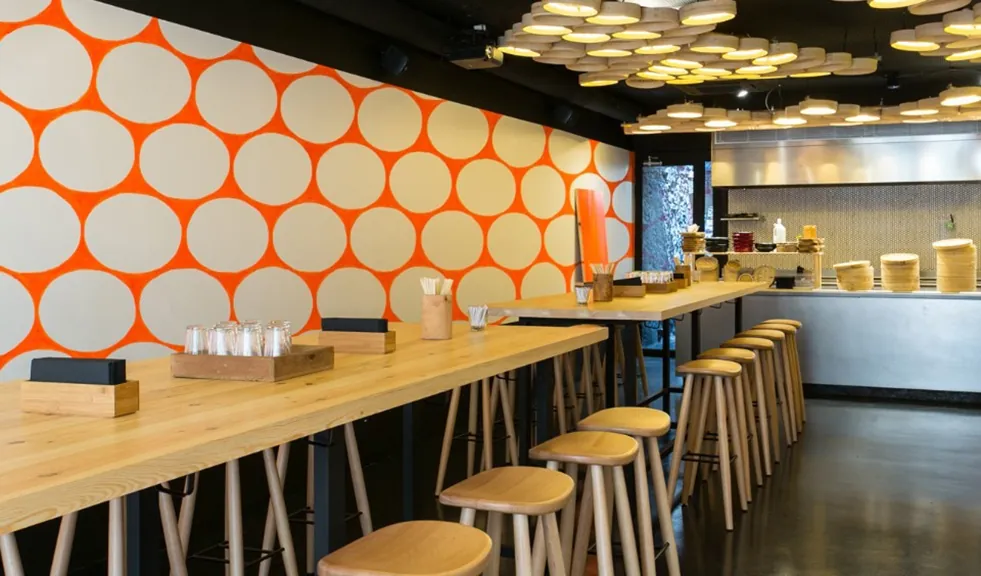
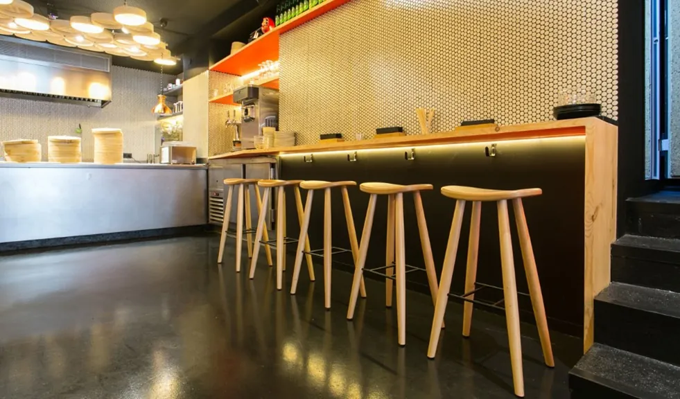
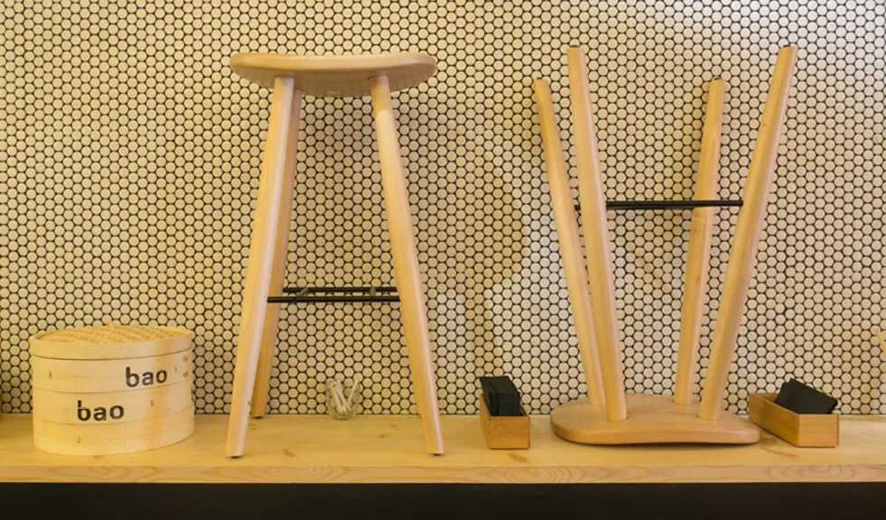
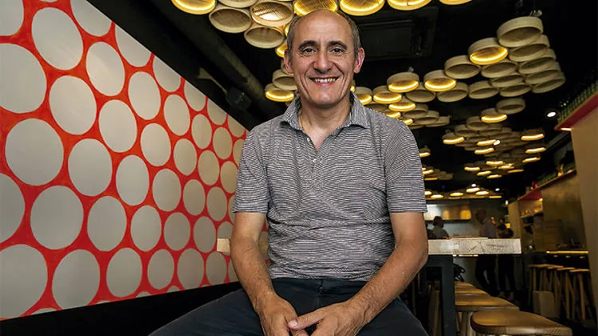

Chipirón & huevo
7 €Chipirón a la plancha, huevo a baja temperatura, panceta crujiente y salsa tártara casera. El favorito declarado de la sala.
Taberna asiática del chef Paco Pérez (Miramar **). Masa madre traída de Asia, cocina abierta y la inquietud de seis baos rotatorios donde cabe el wagyu, el rabo de toro o el chipirón con huevo. Comida casual hecha con seriedad.
Una fermentación lenta que Paco trajo en bote desde Asia. Harina Ylla, agua, sal, leche. Cero atajos: el bao tarda lo que tarda el reloj, no lo que pide la prisa.
Cocción al vapor en cestillo tradicional. Ni un grado más, ni un minuto menos. El bao sale tibio, blanco, con una pliegue exacta y la textura algodonosa que define una buena casa.
Wagyu fricandó, rabo de toro con tendón, chipirón con huevo a baja temperatura, sobrasada con porc negre. El bao es la masa; el alma es lo que viene dentro.
Chipirón a la plancha, huevo a baja temperatura, panceta crujiente y salsa tártara casera. El favorito declarado de la sala.
Wagyu cocinado a fuego lento en jugo de fricandó catalán con setas. La comida de la abuela atrapada dentro de una masa al vapor.
Carne deshilachada que se cae sola, salsa reducida, brote fresco para cortar. Un guiso de domingo metido en un bocado.
Cerdo ibérico, torta del Casar fundida, bacon y patata paja. Donde la sobremesa catalana le da un abrazo a Tokio.
Sobrasada de porc negre mallorquín, queso de Mahón, miel. El bocado mediterráneo más improbable y a la vez más lógico de la carta.
Tofu macerado en soja y jengibre, kimchi suave, brotes. La opción vegetariana no es una concesión: es una de las recetas mejor pensadas.
Para acompañar: Pulpo picón, crunchi edamame, ceviche vegetal con fruta y aguacate, mejillones marinados en escabeche de algas, xiao long bao y dumplings de pollo al curry o ternera.
Para beber: Sakes seleccionados, jarras de cerveza, vinos por copa, limonada de la casa con lima, menta y citronella, y horchata con frambuesa y miel.
Para terminar: Helado de manzana asada y el legendario bao helao — helado de mango envuelto en masa al vapor. Si está en oferta esa noche, pídelo.
Entras por la puerta de madera de pino — la fachada es eso, madera honesta — y lo primero que ves son las lámparas. Cuencos de papel iluminados como una constelación baja, suspendidos sobre la barra. Cestillos de bambú apilados. Una pared de lunares naranjas pintada a mano que ya es marca.
Te sientas en un taburete de pino macizo, alto, con asiento de luna. La cocina abierta huele a vapor, a salsa de soja reducida, a aceite caliente. No hay manteles. No hay carta extensa. Hay seis baos, un puñado de platillos y unas cervezas frías.
Comes con las manos. El bao se abre, se rellena la vista antes que la boca, se muerde. Suena un poco a ritual y un poco a comida rápida y exactamente esa es la idea: casual food hecha con la cabeza de un chef de dos estrellas. Tomarse en serio lo informal.





De martes a jueves se suele encontrar mesa, pero los viernes y sábados la sala se llena pronto, sobre todo el segundo turno. Lo más rápido es mandarnos un mensaje por WhatsApp al 691 40 35 99 indicando día, hora y número de personas. Te confirmamos en el mismo chat.
Sí. El bao de tofu marinado, la ceviche vegetal con fruta y aguacate, y el crunchi edamame son veganos o se pueden adaptar. La masa del bao es vegetal de origen. Si tienes alguna intolerancia o alergia, dilo en el momento del pedido y te explicamos qué evitar.
Sí. Servicio de takeaway directo por teléfono o WhatsApp, y reparto a domicilio a través de Glovo y Uber Eats dentro del radio del barrio. Los baos viajan razonablemente bien si los comes en los siguientes veinte minutos, no más.
Sí, hay carta corta pero pensada: un par de junmais para abrir, un sake más estructurado para acompañar los baos de carne y un nigori dulce para cerrar. También cerveza japonesa, vinos por copa y una limonada casera con lima, menta y citronella que es la otra gran recomendación de la casa.
Esto era una demo
Esta web era una muestra de lo que podríamos hacer para Bao Bar. Si te ha gustado y quieres una para tu negocio, escríbenos — Pedro te responde personalmente y la web final la adaptamos al 100% a tu gusto.
Pedro Núñez · Impacto Digital